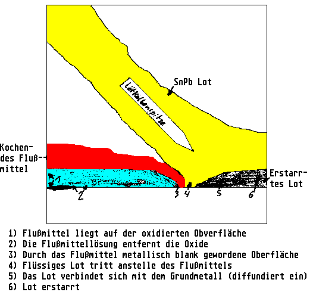

Previous
Next
TOC
Das verhalten vom Flußmittel und dem Lötzinn beim Löten, sehen sie
in der untenstehenden Abbildung.

Das macht man dann so:
- Erst mit der Pumpe entlöten (vorsicht: Der Luftstrom kann
statische Spannungen bis gegebenenfalls 5000 Volt erzeugen), also
bei teuren Baugruppen, etc. dann auf Entlötlitze umsteigen!
- Lötaugen, die nicht frei geworden sind, in
einem Ansatz neu ver-
zinnen und wieder absaugen. Die Lötstelle muß dazu heiß genug sein
damit das Lötzinn wie der Honig im Sommer um die Lötstelle fließen
kann um eine glatte halbkugelförmige Lötstelle zu bilden! Das Löt-
zinn soll nicht nur die elektrische Funktion sondern auch den
meachnischen Halt sicherstellen, aus diesem Grund ist bei Bauteilen
die vom Gewicht her mehr auf die Waage bringen und die Lötstelle um
einiges größer als zum Beispiel bei Kleinsignaltransistoren vom
Typ BC107.
- Mit dem Lötkolben jedes Beinchen im Loch zentrieren, damit sie
nicht mehr mit dem Lötauge verbunden sind (mechanische und elek-
trische Verbindung auftrennen)
- Auf der Oberseite jeden Pin mit einem flachem Gegenstand
leicht
zum IC hin drücken.
Jetzt kommt der IC frei und kann herausgenommen werden.
weiterblättern
Kapitel Der Umgang mit dem Lötkolben, Seite 2